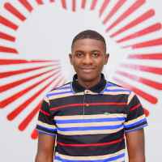
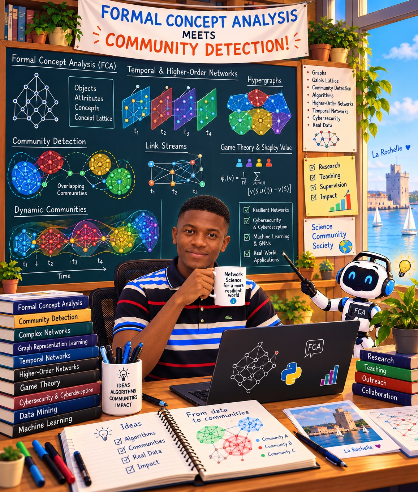

Dynamic & overlapping communities
Community detection in link streams, fuzzy/overlapping memberships, temporal benchmarks, and evolving mesoscale structure.
Network Science · Complex Systems · Formal Concept Analysis
PhD in Computer Science
I study how meaningful structure emerges and evolves in complex networks, including overlapping and dynamic communities, hypergraphs, higher-order interactions, and interpretable network models.

Animated research illustration: communities overlap, exchange bridge nodes and carry time-stamped interaction pulses.
Research
My current research sits at the intersection of network science, graph algorithms, and Formal Concept Analysis (FCA). I develop methods for detecting and interpreting community structure when memberships overlap, interactions evolve continuously over time, or relations involve more than pairs of nodes.
A recurring idea in my work is that network structure should not only be detected, but also explained. FCA provides a mathematical language for organizing shared relational patterns into concept structures; network-science methods provide scalable tools for uncovering mesoscopic organization. I study how the two viewpoints can reinforce each other.
Community detection in link streams, fuzzy/overlapping memberships, temporal benchmarks, and evolving mesoscale structure.
Hypergraph community detection, synthetic higher-order benchmarks, overlapping communities, outliers, and non-pairwise interaction structure.
Shapley-value attribution on attack graphs, community deception, interpretable interventions, and extensions toward multi-domain deception.
Current directions
Developing temporal extensions of FCA for evolving and spatiotemporal relational data, with the aim of extracting interpretable trajectories, roles, and recurring interaction patterns.
Extending synthetic benchmark design to hypergraphs with overlapping communities and outliers, enabling controlled evaluation of higher-order community-detection algorithms.
Publications
M. Waffo Kemgne, J.-L. Guillaume, E. G. Tajeuna, C. Demko, R. Missaoui, K. Bertet
J.-L. Guillaume, M. Waffo Kemgne
M. Waffo Kemgne, C. Demko, J.-L. Guillaume, K. Bertet
M. Waffo Kemgne, O. Tsemogne, C. A. Kamhoua
M. Waffo Kemgne, J.-L. Guillaume, C. Demko, D. Temfack, K. Bertet
M. Waffo Kemgne, J.-L. Guillaume, C. Demko, K. Bertet
M. Waffo Kemgne, A. Huchet, J.-L. Guillaume, C. Demko, K. Bertet
M. Waffo Kemgne, A. Huchet, C. Demko, K. Bertet, J.-L. Guillaume
M. Waffo Kemgne, C. Demko, J.-L. Guillaume, K. Bertet
M. W. Kemgne, B. B. K. Njionou, D. I. Ignatov, L. Kwuida
C. Demko, J. Richard, M. Waffo Kemgne, C. Faucher, K. Bertet
M. W. Kemgne, C. Demko, K. Bertet, J.-L. Guillaume
M. Waffo Kemgne, B. B. K. Njionou, L. Kwuida, D. I. Ignatov
M. W. Kemgne, C. Demko, K. Bertet, J.-L. Guillaume
M. Waffo Kemgne, C. Demko, J.-L. Guillaume, K. Bertet
M. Waffo Kemgne
Teaching
160 HETD teaching-and-research appointment. Confirmed teaching includes M1 Advanced Databases/NoSQL (MongoDB, GraphQL), L2 Software Engineering, and M1 Concurrent & Distributed Programming.
Master’s teaching combining lectures, practical sessions, Python notebooks, evaluation metrics, and interpretation of network-analysis results.
Bachelor’s teaching in graph algorithms and complexity, plus practical programming in C.
Supervision
Research projects with students at La Rochelle Université (France).
La Rochelle Université · Student research project
Extending cooperative-game attribution and deception strategies across coupled domains.
La Rochelle Université · Student research project
Exploring curvature-based methods for detecting and tracking evolving community structure.
La Rochelle Université · Student research project
Student project connecting Shapley attribution to structural perturbations designed to hide communities.
La Rochelle Université · Student research project
Student project on game-theoretic attribution for link-prediction mechanisms.
La Rochelle Université · Student research project
Network analysis of collaboration patterns and their evolution within the laboratory.
Academic service & community
Beyond research and teaching, I contribute through peer review, scientific event organization, interdisciplinary mentoring, and university service.
Reviewer for international research venues in network science, web science, and fuzzy systems.
Supported interdisciplinary student teams working on industry-inspired AI use cases, contributing to the educational and technical aspects of the event.
Member of the organizing committee of the French AI platform PFIA 2024 in La Rochelle, contributing to the local scientific community and event organization.
Elected member of the university Research Commission during my doctoral appointment, contributing to research governance and collective academic life.
Selected scientific activities
Two accepted contributions (oral presentation and poster) on hypergraph benchmarks with overlapping communities and outliers, and on community-detection algorithm design. Presentations scheduled for the December 2026 conference.
Presented two research papers at the international conference on social network analysis and mining.
International research visit focused on higher-order networks, synthetic hypergraph benchmarks, overlapping communities, and related modeling questions.
Presented research at ASONAM 2024 and 2025, including the work recognized with a Best Paper Award in 2025.
Awards & outreach
AIMS Rwanda: MSc in Data Science with Distinction (2023), full scholarship · University of Dschang: MSc in Mathematics with Honours (2021), top-ranked student (2020) · Cameroon: President’s Excellence Prize (2019–2021).
ASONAM 2025 for From Non-overlapping to Overlapping Communities.
Read the paperCreated and presented a short popular-science film explaining my PhD research on dynamic community detection and FCA to a non-specialist audience.
Peer reviewer for international journals and conferences, AI4Industry mentor and jury member, PFIA organizer, and elected Research Commission member.
Explore academic service →
A playful visual tribute offered for my PhD defense, bringing together Formal Concept Analysis, concept lattices and community detection.
Academic path
Dynamic Community Detection Through the Lens of Formal Concept Analysis. Research on overlapping, dynamic and higher-order communities, link streams, FCA and interpretable network analysis.
Supervision: Christophe Demko (PhD director); Jean-Loup Guillaume and Karell Bertet (research co-supervision).
Higher-order networks, hypergraph benchmark generation, overlapping communities, outliers, and temporal/spatiotemporal representations.
Attack graphs, Shapley values, vulnerability ranking and cyberdeception. Full scholarship.
Supervisors: Charles Kamhoua and Serge Olivier Tsemogne Kamguia.
Formal Concept Analysis, lattice theory and cooperative game theory. Graduated top of class.
Supervisors: Blaise Blériot Koguep Njionou and Léonard Kwuida.
Foundations in mathematics, algorithms, graph theory and computer science.
Research collaborations
My research spans a community of coauthors across network science, Formal Concept Analysis, game theory and cybersecurity. This interactive map highlights all coauthors identified in the publications listed on this website (including accepted conference papers). Select a name to explore our shared work.
Hover, tap, or use the list to explore · Connections indicate shared publications, not institutional affiliations.
Coauthor explorer 14 researchers
Based on the published and accepted works presented in the publications section. Under-review manuscripts are excluded. More complete and up-to-date bibliographic records are available on Google Scholar.
Contact
I welcome thoughtful exchanges, collaborative research, and conversations about emerging directions in network science and related fields.